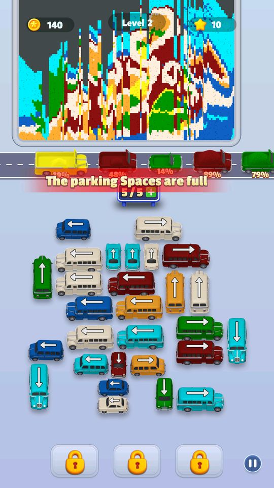
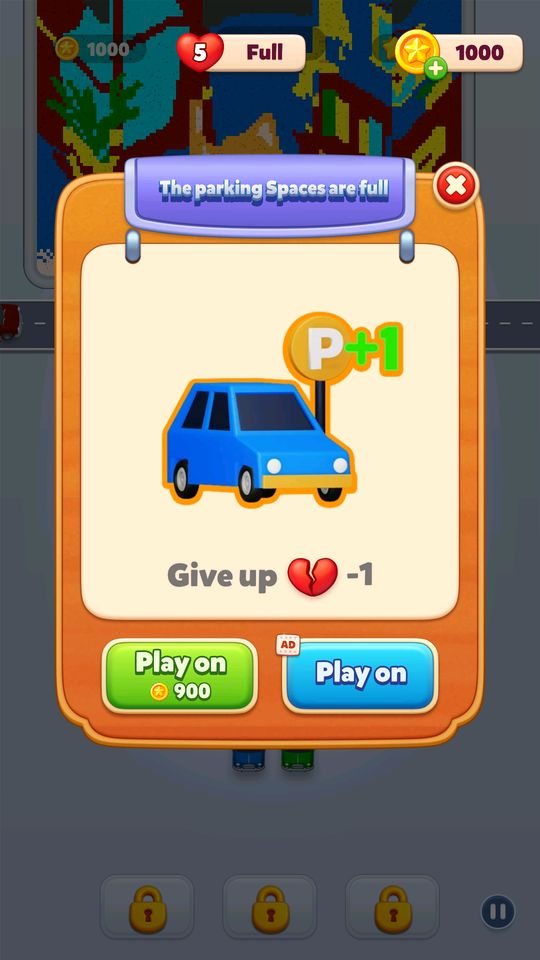
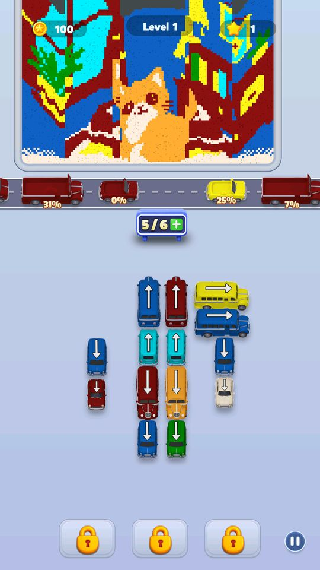

Thua & hồi sinh
Khi đường vòng kín chỗ và không xe nào còn hút được cát trong 0,5 giây (ân hạn 3 giây sau khi dùng booster), lõi Bus hiện chữ «车位已满» (hết chỗ đỗ) và báo thua.
Mô tả
- Khi đường vòng kín chỗ và không xe nào còn hút được cát trong 0,5 giây (ân hạn 3 giây sau khi dùng booster), lõi Bus hiện chữ «车位已满» (hết chỗ đỗ) và báo thua.
- Khung m8 tạm dừng ván và mở popup hồi sinh: trả
 900 coin hoặc xem quảng cáo để mở thêm 1 chỗ trên đường vòng rồi chơi tiếp; nút Give up đi tiếp sang chuỗi «mất gì nếu bỏ» (mạng + sao, chuỗi thắng, hệ số sự kiện, thẻ).
900 coin hoặc xem quảng cáo để mở thêm 1 chỗ trên đường vòng rồi chơi tiếp; nút Give up đi tiếp sang chuỗi «mất gì nếu bỏ» (mạng + sao, chuỗi thắng, hệ số sự kiện, thẻ). - Từ chối hết thì trừ mạng của lượt này, hiện trang «Level Failed!» với Try again; hết mạng thì về Home.
- Popup có 3 biến thể (thường, xe hút cát cho nhóm 24 — nhánh AB mà client không tự gán, suy luận —, không QC cho nhóm AB 1) và một khối bán IAP xoay vòng theo trọng số.
- Đây là điểm kiếm tiền chính trong ván: mỗi lần hồi sinh nới đường vòng thêm một chỗ, tối đa tới trần 10.
Thiết kế chi tiết
900 coin hoặc QC mở thêm 1 chỗ đỗTóm tắt thiết kế
Code Thua khi đường vòng kín chỗ và không xe nào còn hút được cát suốt 0,5 giây (SandUpperController::_checkSandJamFail; ân hạn 3 giây sau khi dùng booster); bàn hiện «车位已满» (hết chỗ đỗ) rồi khung tạm dừng ván và mở popup hồi sinh.
Code Hồi sinh = +1 chỗ trên đường vòng (5 → tối đa 10), trả 900 coin (nhóm 47: 1.300; nhóm 48: 1.800) hoặc xem QC. Nhóm người dùng 24 có biến thể «xe hút cát»: xoá xe trên đường và hút cát lại (24/47/48 là nhánh AB client không tự gán — có thể không chạy, suy luận). Live 13/11 Máy snapshot ở nhóm 44 → giá 900.
Code Give up không thoát ngay: lần lượt các ô «mất gì nếu bỏ» — mạng + sao, chuỗi thắng Win 1/2/3, hệ số sự kiện (×2…×10 → ×1), thẻ — mỗi ô có nút quay lại hồi sinh. Hết ô mới trừ  1 mạng và hiện «Level Failed!» với Try again.
1 mạng và hiện «Level Failed!» với Try again.
CodeNhận định Không thấy giới hạn số lần hồi sinh; trần thực tế là trần đường vòng: từ 5 lên 10 chỗ = 5 lần mỗi level, sau đó nút coin/QC bị phủ lớp chặn (suy luận).
APK Popup có thanh coin + mạng, ô bán IAP xoay vòng theo trọng số (live: purchaseBannerWeight = 3).
Code Điều kiện thua đọc từ disasm: tranh chưa sạch ∧ không tạm dừng ∧ không đang dùng booster ∧ đường đầy ∧ không còn tiến triển hút — giữ liên tục 0,5 giây. Vì allocator chia sức chứa xe đúng bằng cát, thêm 1 chỗ luôn mở lại một thứ tự giải được.
Luồng người chơi từng bước
- Phát hiện kẹtClientCode
SandUpperController::_checkSandJamFail: đường đầy (isRingTrackFull) và không xe nào còn tiến triển hút (_hasAnySandMatchProgress) liên tục ≥ 0,5 s →triggerGameFail→forceGameFail. Đang/vừa dùng booster: chờ 3 s. Bộ đếm 3,0 s củaBQGameControl::checkGameFail(hàng người) thoát ngay vì mọi level chạy chế độ cát. - Banner hết chỗGiao diệnCodeAPKLayer «GU_游戏内_车位已满» trên bàn, rồi banner loại thua của khung («游戏失败_失败类型横幅展示»).

Bàn kẹt: đường 5/5 đầy, không xe nào khớp màu đáy tranh → dải đỏ «The parking Spaces are full» hiện trên đường ngay trước popup hồi sinh (playtest 15/11, level 2) - Popup hồi sinhGiao diệnAPKCodeTiêu đề «No space!», dòng «The parking Spaces are full», icon «加停车位» (thêm chỗ), nút coin 900 và nút «Free» có nhãn QC (cả hai ghi «Play on»), nút «Give up», thanh coin/mạng, ô IAP. Nhóm 24: icon xe hút cát, «Clear the vehicles on the track.».

Popup hồi sinh «The parking Spaces are full»: xe xanh + biển P+1, «Give up − 1 mạng», nút Play on 900 coin và Play on (QC); thanh trên hiện mạng 5 Full + coin 1000 (playtest 15/11, level 1) - Trả coinNgười chơiCode
costCoinstrừ 900 (mã lý do 4–7) → «复活成功，继续游戏» →reliveGame. - Xem QCNgười chơiCode
tryShowVideoADloại 6/7 (trang QC «LevelFail») → «复活成功，继续游戏AD». Không có QC: «No ads available». - Hồi sinh trên bànClientCode
gameRespawn: +1 chỗ (expandRingCapacity), hiệu ứng «一字跑道升级动画», xoá cờ thua, bàn chạy tiếp;UDK_TotalReviveCount+1.
Sau khi hồi sinh bằng 900 coin: bộ đếm đường xe tăng 5/5 → 5/6, coin 1000 → 100 (playtest 15/11, level 1) - Give up → ô mạng + saoNgười chơiAPK«About to lose, continue to challenge?» kèm số sao đã gom.
- Ô chuỗi thắngGiao diệnAPKThanh Win 1/2/3 về 0 (hoạt ảnh 1阶/2阶/3阶归零).
- Ô sự kiệnGiao diệnAPKCode«You will lose — Your multiple progress will be reset!» hệ số ×2/×4/×6/×10 → ×1; không có hệ số thì tự bỏ qua.
- Trừ mạng + Level FailedGiao diệnCodeAPK«重玩页面弹出前,扣除本局生命值» rồi trang «Level Failed!» (Level, Rewards, hoạt ảnh mất tim, 3 booster). Try again: đủ mạng chơi lại, thiếu mạng về Home.

Bấm X ở popup hồi sinh (bỏ cuộc) → thẳng trang «Level 2 – Level failed!»: tim vỡ −1, «Rewards: 20» coin (mất), nút Try again; không có panel giữ chân mạng+sao ở level 2 (playtest 15/11, level 2) - Thua hẳnClientCode
failGame→ xoá bộ đếm hồi sinh của level, reset chuỗi thắng, về Home; analytics «关卡失败» với % cát đã gom.


Giá và hiệu ứng hồi sinh theo nhóm người dùng (code)
| Nhóm (UserGroupMgr) | Giá coin | Sức chứa đầu / trần | Hồi sinh làm gì | Popup |
|---|---|---|---|---|
| mặc định (29, 44…) | 900 | 5 / 10 | +1 chỗ | 游戏复活 (thêm chỗ) |
| 24 | 900 | 5 / 10 | xoá xe + hút cát lại; luôn cho hồi sinh | 游戏复活沙子车 |
| 27 | 900 | 6 / 12 | +1 chỗ | 游戏复活 |
| 47 | 1.300 | 5 / 10 | +1 chỗ; ô VIP không giới hạn | 游戏复活 |
| 48 | 1.800 | 5 / 10 | +1 chỗ; ô VIP không giới hạn | 游戏复活 |
Code getRespawnCoinCost, getSlotCapacity, gameRespawn, _getRedFileName. UserGroupMgr::randomEnterGroup chỉ gán 29 (vùng đặc biệt → 44), nên 24/27/47/48 là nhánh AB không được client tự gán (suy luận). Live 13/11 Snapshot: 44.
Biến thể popup theo nhóm AB khung m8 (RedABTest)
| Điều kiện | Layout | Nút |
|---|---|---|
| getPlayMode = 0 (chỉ nhóm AB 1) | …_游戏复活_无看广告继续 | coin + Thoát |
| nhóm người dùng 24 | …_游戏复活沙子车 | coin + QC + Give up |
| còn lại (gồm nhóm AB 90 live) | …_游戏复活 | coin + QC + Give up |
CodeAPK
Bộ đếm Imp_data_fail (live 13/11)
| Trường | Ý nghĩa | Giá trị |
|---|---|---|
| nowlevelCounts | Level của bộ đếm | 0 |
| reliveCounts | Số lần hồi sinh ở level hiện tại | 0 |
| failCounts | Số lần thua | 0 |
| enhanceAllCounts / refreshAllCounts / timeAllCounts | Số lần mở popup hồi sinh theo loại 0/1/2 | 0 / 0 / 0 |
| purchaseBannerWeight | Trọng số xoay vòng ô IAP | 3 |
Live 13/11 goods_merge_data_center_in_game_20241206.fail_data; khoá riêng 2025_1_7_11_45_FailModuleData.
Vận dụng cho game khác
- Cho hồi sinh «mở rộng không gian» thay vì «xoá bớt vật cản»: người chơi thấy rõ thứ mình mua (thêm 1 chỗ) và lần hồi sinh sau khó hơn vì bàn đã rộng — một cách tự giới hạn số lần mua.
- Đặt trần cứng bằng tài nguyên của bàn (10 chỗ) thay vì đếm lượt hồi sinh: không cần UI «còn X lần», và giá trị mỗi lần hồi sinh giảm dần.
- Chuỗi «mất gì nếu bỏ» sau Give up (mạng + sao → chuỗi thắng → hệ số sự kiện → thẻ) nhắc lại từng khoản đầu tư; mỗi ô quay lại popup hồi sinh nên cơ hội bán tăng theo số hệ thống meta đang chạy.
- Trừ mạng ngay trước trang Try again (không phải lúc bắt đầu thua) để mọi lựa chọn hồi sinh/giữ chân vẫn «miễn phí mạng».
- Nhận định Rủi ro: 4–5 màn liên tiếp sau một lần thua có thể gây mệt; nên cho nút «bỏ qua tất cả» hoặc chỉ hiện ô có giá trị lớn nhất.
Ảnh cần chụp (7) — 4 ảnh đã gắn
Chụp vào screens/deep_1113/FailRevive/ rồi ghi tên file vào flow[].shots.
- Banner hết chỗ: Bàn kẹt với chữ hết chỗ đỗ
- Popup hồi sinh: Popup hồi sinh: icon thêm chỗ, nút 900 coin, nút QC, Give up
- Hồi sinh trên bàn: Đường vòng sau khi mở thêm chỗ (6/10)
- Give up → ô mạng + sao: Panel giữ chân mạng + sao
- Ô chuỗi thắng: Ô chuỗi thắng Win 1/2/3 (cần chuỗi thắng đang chạy)
- Ô sự kiện: Ô hệ số sự kiện sẽ về ×1 (cần sự kiện có hệ số)
- Trừ mạng + Level Failed: Trang Level Failed! với Try again
Bảng tổng hợp mọi tính năng đã làm chi tiết: JamBus_ThietKeChiTiet.xlsx.
Mở khóa & điểm vào
Có từ level 1. Không có điều kiện level riêng; chỉ cần còn chỗ khoá trên đường vòng (BQGameDelegateImpl::hasLockedSlotsForRespawn = canExpandRingCapacity, hoặc luôn true cho nhóm người dùng 24) thì nút coin/QC mới bấm được.
Điểm vào:
- Tự động khi lõi Bus báo thua (BQGameDelegateImpl::onGameOver)
- Banner «车位已满» trên bàn trước popup (BQGameControl::forceGameFail)
Cách hoạt động
- Mọi level chạy ở chế độ cát (SandBusGameManager::createGame gọi BQGameSystem::setSandFillMode(true) trước GameManager::createGame), nên phát hiện thua là SandUpperController::_checkSandJamFail (gọi mỗi frame từ SandUpperController::update): đường vòng đầy (BQGameSystem::isRingTrackFull) và không còn tiến triển hút (_hasAnySandMatchProgress) liên tục 0,5 giây → BQGameSystem::triggerGameFail → BQGameControl::forceGameFail khoá cờ thua, dừng lịch BQGameControl_updateQueues, hiện chữ «GU_游戏内_车位已满» rồi sau một độ trễ gọi delegate.
- Khi đang dùng booster bộ đếm bị xoá và có 3,0 giây ân hạn sau đó.
- Bộ đếm 3,0 giây của BQGameControl::checkGameFail (điều kiện theo hàng người, isMatchFailCondition) vẫn được gọi mỗi frame nhưng thoát ngay khi cờ chế độ cát bật — không dùng ở Sandfall.
- BQGameDelegateImpl::onGameOver phát loại thua 0 (không còn chỗ để mở, nhóm ≠ 24) hoặc 2 (còn mở được). m8GameBoardTemplate::onLevelFailed đổi sang overType 1, gói số sao, level, chuỗi thắng rồi gọi m8GameNotify::onBeforeFailTasks: pauseGame và dựng chuỗi «游戏内失败前任务链».
- Bước đầu là banner loại thua (PrefailSystem::createFailTask «游戏失败_失败类型横幅展示»), rồi popup hồi sinh (createFailWindow, chọn file theo _getRedFileName).
- Bấm coin: trừ getRespawnCoinCost (900; nhóm 47: 1.300; nhóm 48: 1.800) → «复活成功，继续游戏»; xem QC → «复活成功，继续游戏AD»; cả hai gọi m8GameProtocol::reliveGame → BQGameDelegateImpl::gameRespawn: tăng UDK_TotalReviveCount, mở thêm 1 chỗ (BQGameSystem::expandRingCapacity) hoặc với nhóm 24 thì xoá xe trên đường vòng và hút cát lại (SandBusGameManager::startRespawnAbsorption), reset cờ thua và chạy tiếp.
- Bấm Give up (createQuitTask «退出_游戏复活挽留»): lần lượt các ô giữ chân mạng + sao (khi có sao), chuỗi thắng, sự kiện, thẻ; mỗi ô có nút tiếp tục quay lại popup hồi sinh.
- Hết lựa chọn: «重玩页面弹出前,扣除本局生命值» trừ 1 mạng, trang «Level Failed!» (PrequitSystem::createTryAgainWindow) với Try again; đủ mạng → «重新开始此关卡», thiếu → «生命不足,不允许重玩,通知各模块失败».
- Cuối cùng «所有挽留任务都失败后,通知各模块失败» → m8GameProtocol::failGame → về Home.
- Mỗi level có bộ đếm số lần hồi sinh riêng trong Imp_data_fail, xoá khi thắng/thua hẳn.
Phần thưởng
Phần thưởng (theo GDD)
| Ngữ cảnh | Phần thưởng | Bằng chứng |
|---|---|---|
| Hồi sinh | +1 chỗ trên đường vòng (nhóm 24: xoá xe + hút cát) | BQGameDelegateImpl::gameRespawn |
Số liệu chính
| Chỉ số | Giá trị | Nguồn |
|---|---|---|
| Đường đầy + không tiến triển hút liên tục bao lâu thì thua | 0,5 s; 3,0 s ân hạn sau booster | fail timer (chế độ cát) · code const |
| Mã lý do khi trừ coin | 4–7 (theo loại popup và có QC hay không) | coin cost reason · code const |
| Bộ đếm của lõi Jam Bus gốc; thoát ngay khi BQGameSystem::setSandFillMode(true) | 3,0 s | fail timer (hàng người, không dùng) · code const |
Use case (15)
Bấm vào từng use case để mở. Mở/đóng tất cả
UC-01 Phát hiện thua (kẹt 0,5 giây)
Các bước- SandUpperController::_checkSandJamFail: đang dùng booster (BQGameSystem::isUsingProp) → xoá bộ đếm và đặt thời gian chờ 3,0 giây (đếm lùi trong SandUpperController::update)
- Hết thời gian chờ, BQGameSystem::isRingTrackFull = true và _hasAnySandMatchProgress = false (không xe nào đang tới vùng khớp, không xe nào hút được màu với tới) → bật cờ, cộng dồn thời gian; có tiến triển → xoá bộ đếm
- Bộ đếm ≥ 0,5 s → BQGameSystem::triggerGameFail → BQGameControl::forceGameFail: cờ thua (+0x51), unschedule BQGameControl_updateQueues, layer «GU_游戏内_车位已满» (anim «出现») rồi gọi delegate sau DelayTime
- BQGameControl::checkGameFail (3,0 s, isMatchFailCondition so màu người đầu hàng) vẫn được lambda BQGameControl_updateQueues gọi nhưng thoát ngay vì cờ chế độ cát (+0x60) = 1
| Actor | System |
|---|---|
| Trigger | Mỗi frame SandUpperController::update → _checkSandJamFail |
| Điều kiện | Còn cát trên tranh, không có popup thêm chỗ / booster đang mở, chưa thua |
| Kết quả | BQGameDelegateImpl::onGameOver(level, thua) |
| Quy tắc / số liệu | 0,5 giây kẹt liên tục; 3,0 giây ân hạn sau booster. Disasm 0x1ceb0a8: (tranh chưa sạch) ∧ (không tạm dừng) ∧ (không dùng booster) ∧ (ân hạn ≤ 0) ∧ isRingTrackFull ∧ ¬_hasAnySandMatchProgress → cộng bộ đếm; ≥ 0,5 giây → cờ thua + triggerGameFail. Có tiến triển hoặc đường còn chỗ → bộ đếm về 0. |
| Evidence | SandUpperController::_checkSandJamFail; SandUpperController::_hasAnySandMatchProgress; BusQueue::BQGameSystem::isRingTrackFull; BusQueue::BQGameSystem::triggerGameFail; BusQueue::BQGameControl::forceGameFail; BusQueue::BQGameSystem::setSandFillMode; BusQueue::BQGameControl::checkGameFail |
UC-02 Chuyển loại thua sang khung m8
Các bước- BQGameDelegateImpl::onGameOver: canExpandRingCapacity = false và nhóm ≠ 24 → loại 0; còn lại → loại 2
- m8GameBoardTemplate::onLevelFailed: loại 0/2 → overType 1 (loại 0 đặt tham số −1)
- m8GamePrefailAdapter::setPrefailParams: overType 1 → lý do 1 (2 nếu isGoodsMatchDropMode); overType 2 → 3; overType 5 → 1; tham số âm → cờ +0xd4
| Actor | System |
|---|---|
| Trigger | onGameOver(thua) |
| Điều kiện | — |
| Kết quả | PrefailSystem biết lý do (P-复活原因) và còn mở chỗ được hay không |
| Quy tắc / số liệu | Lý do 1 tương ứng tiêu đề .lan key1 «No space!» (key2 «The time has come!» dành cho lý do hết giờ của template) — ánh xạ lý do → khoá là suy luận |
| Evidence | BusQueue::BQGameDelegateImpl::onGameOver; m8::m8GameBoardTemplate::onLevelFailed; m8::m8GamePrefailAdapter::setPrefailParams |
UC-03 Banner loại thua
Các bước- m8GameNotify::onBeforeFailTasks: m8GameProtocol::pauseGame, TaskList::create
- m8GamePrefailAdapter::createFailTask → PrefailSystem::createFailTask («游戏失败_失败类型横幅展示»)
| Actor | System |
|---|---|
| Trigger | Bắt đầu chuỗi «游戏内失败前任务链» |
| Điều kiện | — |
| Kết quả | Banner báo lý do thua rồi chuyển sang popup hồi sinh |
| Evidence | m8::m8GameNotify::onBeforeFailTasks; m8::m8GamePrefailAdapter::createFailTask; PrefailSystem::createFailTask |
UC-04 Popup hồi sinh: chọn biến thể
Các bước- PrefailSystem::_getRedFileName: RedABTest::getPlayMode = 0 → «OSG_复活挽回模块_弹窗_游戏复活_无看广告继续» (chỉ nút coin + Thoát)
- Ngược lại, nhóm người dùng = 24 → «…_游戏复活沙子车» (icon xe hút cát, «Clear the vehicles on the track.»)
- Còn lại → «…_游戏复活» (icon «加停车位» = thêm chỗ đỗ, nút Give up)
- Đặt biến P-复活原因 (nếu lý do 1–3) và P-时间增加量; chạy «道具购买弹窗初始化»
| Actor | System |
|---|---|
| Trigger | PrefailSystem::createFailWindow |
| Điều kiện | — |
| Kết quả | Popup tiêu đề «No space!», dòng «The parking Spaces are full», nút coin và nút «Free» (QC) đều ghi «Play on», nút «Give up»; thanh mạng/coin |
| Quy tắc / số liệu | getPlayMode = 0 chỉ ở nhóm AB 1; nhóm 90 (live) = 1 → biến thể thường |
| Evidence | PrefailSystem::createFailWindow; PrefailSystem::_getRedFileName; RedABTest::getPlayMode |
UC-05 Giá và trạng thái nút
Các bước- PrefailSystem::_setReliveReboltVars: P-按钮数 (theo nhóm), P-购买所需金币数 = BQGameDelegateImpl::getRespawnCoinCost
- BQGameDelegateImpl::hasLockedSlotsForRespawn quyết định P-是否启用金币按钮屏蔽层 / P-是否启用免费按钮屏蔽层
- PrefailSystem::updateCoinUI cập nhật P-持有金币数 và thanh mạng
| Actor | System |
|---|---|
| Trigger | Khởi tạo nút trong popup |
| Điều kiện | — |
| Kết quả | Nút coin/QC bị phủ lớp chặn khi đường vòng đã ở trần (suy luận) |
| Quy tắc / số liệu | Giá 900 coin mặc định; nhóm 47 → 1.300; nhóm 48 → 1.800 |
| Evidence | PrefailSystem::_setReliveReboltVars; BusQueue::BQGameDelegateImpl::getRespawnCoinCost; BusQueue::BQGameDelegateImpl::hasLockedSlotsForRespawn; PrefailSystem::_getReliveCoinCost |
UC-06 Hồi sinh bằng coin
Các bước- m8GamePrefailAdapter::costCoins: delegate addCoin(−giá, mã lý do 4–7 tuỳ loại)
- Task «复活成功» → «复活成功，继续游戏»
- m8GameProtocol::addReliveCounts → FailSystem::addReliveCounts
- m8GameProtocol::reliveGame → BQGameDelegateImpl::gameRespawn
| Actor | Player |
|---|---|
| Trigger | Bấm nút coin |
| Điều kiện | Đủ coin, còn chỗ khoá |
| Kết quả | Đường vòng +1 chỗ, ván chạy tiếp; UDK_TotalReviveCount +1 |
| Quy tắc / số liệu | Thiếu coin: mở shop qua showPurchaseLayer (suy luận) |
| Evidence | m8::m8GamePrefailAdapter::costCoins; m8::m8GameProtocol::addReliveCounts; FailSystem::addReliveCounts; m8::m8GameProtocol::reliveGame; BusQueue::BQGameDelegateImpl::gameRespawn |
UC-07 Hồi sinh bằng quảng cáo
Các bước- m8GamePrefailAdapter::tryShowVideoAD → m8GameProtocol::tryShowVideoAD với mã vị trí 6 hoặc 7 (theo loại)
- Xem xong → «复活成功AD» → «复活成功，继续游戏AD»
- m8GameProtocol::reliveGame
| Actor | Player |
|---|---|
| Trigger | Bấm nút miễn phí (biểu tượng QC) |
| Điều kiện | Có QC thưởng |
| Kết quả | Như hồi sinh bằng coin, không tốn coin |
| Quy tắc / số liệu | Loại 6/7 → trang QC «LevelFail» (bảng loại → trang của m8GameAdapter); không có QC → text «No ads available» |
| Evidence | m8::m8GamePrefailAdapter::tryShowVideoAD; m8::m8GameProtocol::tryShowVideoAD; m8::m8GameProtocol::reliveGame |
UC-08 Hiệu ứng hồi sinh trên bàn
Các bước- Nhóm 24: SandBusGameManager::startRespawnAbsorption (xoá xe trên đường vòng, hút cát lại)
- Nhóm khác: BQGameSystem::expandRingCapacity → BQRingTrackCtl::expandCapacity (+1 nếu < trần), cập nhật hiển thị, hiệu ứng «一字跑道升级动画»
- BQGameSystem::gameRespawn → BQGameControl::gameRespawn (xoá cờ thua, bộ đếm, _scheduleUpdate, BQRingTrackCtl::notifyRespawn)
- SandBusGameManager::resumeAfterRespawn
| Actor | System |
|---|---|
| Trigger | gameRespawn |
| Điều kiện | — |
| Kết quả | Có thêm chỗ đỗ, thời gian kẹt về 0 |
| Quy tắc / số liệu | Trần (5, 10): mở tối đa 5 lần mỗi level (suy luận từ +1/lần) |
| Evidence | BusQueue::BQGameDelegateImpl::gameRespawn; BusQueue::BQGameSystem::expandRingCapacity; BusQueue::BQRingTrackCtl::expandCapacity; BusQueue::BQGameControl::gameRespawn |
UC-09 Give up → chuỗi giữ chân
Các bước- PrefailSystem::createQuitTask «退出_游戏复活挽留» mở panel «OSG_退出挽回模块_弹窗_复活挽回»
- Nếu có sao (tham số > 0): createlifeAndStarTaskTask → ô «About to lose, continue to challenge?» với P-星星数
- createWinStreakTask → ô chuỗi thắng Win 1/2/3 (P-连胜数)
- createActivityTask → ô «You will lose / Your multiple progress will be reset!» (P-当前倍数; hệ số < 1 thì tự bỏ qua «挽留失败»)
- createCardTask → ô thẻ «M8G_复活挽回模块_复活挽回_卡牌挽回»
| Actor | Player |
|---|---|
| Trigger | Bấm Give up / đóng popup |
| Điều kiện | — |
| Kết quả | Mỗi ô cho chọn quay lại popup hồi sinh (createReliveWindow) hoặc tiếp tục bỏ |
| Quy tắc / số liệu | Hoạt ảnh hệ số giảm 2/4/6/10 → 1 |
| Evidence | PrefailSystem::createQuitTask; PrefailSystem::createlifeAndStarTaskTask; PrefailSystem::createLifeAndStarCell; PrefailSystem::createWinStreakCell; PrefailSystem::createActivityCell; PrefailSystem::createCardCell |
UC-10 Trừ mạng và trang Try again
Các bước- Task «重玩页面弹出前,扣除本局生命值» (m8GamePrestartAdapter::createLifeTask)
- m8GamePrequitAdapter::createTryAgainWindow → trang «Level Failed!» (Level, độ khó, «Rewards:», hoạt ảnh mất mạng)
- Try again: đủ mạng → «重新开始此关卡»; thiếu → «生命不足,不允许重玩,通知各模块失败»
| Actor | System |
|---|---|
| Trigger | Mọi ô giữ chân bị từ chối |
| Điều kiện | — |
| Kết quả | Chơi lại hoặc thua hẳn |
| Quy tắc / số liệu | Mạng trừ đúng một lần cho lượt chơi này |
| Evidence | m8::m8GameNotify::onBeforeFailTasks; m8::m8GamePrestartAdapter::createLifeTask; m8::m8GamePrequitAdapter::createTryAgainWindow; PrequitSystem::createTryAgainWindow |
UC-11 Thua hẳn về Home
Các bước- m8GameBoardTemplate::onBeforeFailTaskFail → m8GameProtocol::failGame
- m8GameFailAdapter::onFail → FailSystem::clearReliveCounts
- m8GameFailAdapter::onDidFail → m8GameProtocol::loadingBeforeQuitGame
| Actor | System |
|---|---|
| Trigger | «所有挽留任务都失败后,通知各模块失败» |
| Điều kiện | — |
| Kết quả | Về Home; chuỗi thắng reset; analytics «关卡失败» |
| Quy tắc / số liệu | Bản BQ độc lập có GameLevelRespawnView/GameLevelFailView nhưng không chạy ở bản phát hành |
| Evidence | m8::m8GameBoardTemplate::onBeforeFailTaskFail; m8::m8GameFailAdapter::onFail; m8::m8GameFailAdapter::onDidFail; FailSystem::clearReliveCounts |
UC-12 Bộ đếm hồi sinh theo level
Các bước- FailSystem::addReliveCounts: nếu nowlevelCounts < level hiện tại thì đặt lại (reliveCounts = 0) rồi +1
- FailSystem::addRelivePopCounts: loại 0 → enhanceAllCounts, 1 → refreshAllCounts, 2 → timeAllCounts (m8GameFailAdapter::addRelivePopCounts đổi overType 5 → 0)
- Imp_data_fail::saveData ghi «2025_1_7_11_45_FailModuleData»
| Actor | System |
|---|---|
| Trigger | Mỗi lần hồi sinh / mở popup |
| Điều kiện | — |
| Kết quả | Số liệu cho cân bằng/AB và debug (sendEnhance/Refresh/TimeReliveCounts → customInt11/10/9) |
| Quy tắc / số liệu | Live 13/11: mọi bộ đếm = 0, purchaseBannerWeight = 3 |
| Evidence | FailSystem::addReliveCounts; FailSystem::addRelivePopCounts; m8::m8GameFailAdapter::addRelivePopCounts; Imp_data_fail::saveData; m8::m8GameFailAdapter::sendEnhanceReliveCounts |
UC-13 Khối bán IAP trong popup
Các bước- m8GamePrefailAdapter::showPurchaseBanner gắn banner vào «内购板位定位点»
- Imp_data_fail::addPurchaseBannerWeight / resetPurchaseBannerWeight xoay vòng gói theo trọng số
| Actor | System |
|---|---|
| Trigger | Dựng popup hồi sinh |
| Điều kiện | Có gói để bán |
| Kết quả | Một ô mua gói hiện trong popup hồi sinh |
| Quy tắc / số liệu | Danh sách gói thuộc Shop/IAPPayment |
| Evidence | m8::m8GamePrefailAdapter::showPurchaseBanner; Imp_data_fail::addPurchaseBannerWeight; Imp_data_fail::resetPurchaseBannerWeight |
UC-14 Analytics hồi sinh
Các bước- m8GamePrefailAdapter::onANAEventPush gửi level_id, by_type, relive_type
| Actor | System |
|---|---|
| Trigger | Chọn hồi sinh |
| Điều kiện | — |
| Kết quả | Sự kiện phân tích hồi sinh |
| Evidence | m8::m8GamePrefailAdapter::onANAEventPush |
UC-15 Vì sao hồi sinh +1 chỗ luôn có ích
Các bước- +1 chỗ trên đường (expandRingCapacity) → người chơi thả được thêm 1 xe
- Mọi xe trên đường được hút một lượt (startRespawnAbsorption)
- Tổng sức chứa vẫn đúng bằng cát còn lại (allocator) → luôn tồn tại thứ tự giải
| Actor | System |
|---|---|
| Trigger | Sau hồi sinh |
| Điều kiện | Đường đầy, không xe nào hút được |
| Kết quả | Hồi sinh không làm mất cát hay xe; chỉ nới bộ đệm |
| Quy tắc / số liệu | Trần 10 chỗ (12 nhóm 27) → tối đa 5 lần +1 từ 5 chỗ (suy luận, không thấy giới hạn số lần riêng) |
| Evidence | BusQueue::BQGameSystem::expandRingCapacity; SandBusGameManager::startRespawnAbsorption; SandUpperController::startRespawnAbsorption; SandBusCarAllocator::allocate |
Cấu hình (19)
Gộp mọi nguồn: const trong pseudo-C của libMyGame.so, JSON/CSV giải mã trong APK (assets_dec/), storage key (MMKV / UserDefault), nhóm A/B, giá trị server / Firebase RC trong snapshot thiết bị 13/11/2026.
| Nguồn | Key | Kiểu | Giá trị | Ý nghĩa | Nơi định nghĩa |
|---|---|---|---|---|---|
| code const | getRespawnCoinCost | int | 900 (mặc định); 1.300 (nhóm 47); 1.800 (nhóm 48) | Giá hồi sinh bằng coin | BQGameDelegateImpl::getRespawnCoinCost |
| code const | hasLockedSlotsForRespawn | bool | true nếu nhóm 24, ngược lại = canExpandRingCapacity | Còn mở thêm chỗ được | BQGameDelegateImpl::hasLockedSlotsForRespawn |
| code const | getSlotCapacity | int pair | (5, 10); nhóm 27: (6, 12) | Sức chứa / trần đường vòng | BQGameDelegateImpl::getSlotCapacity |
| code const | fail timer (chế độ cát) | float | 0,5 s; 3,0 s ân hạn sau booster | Đường đầy + không tiến triển hút liên tục bao lâu thì thua | SandUpperController::_checkSandJamFail |
| code const | P-复活原因 | int | overType 1 → 1 (2 nếu goods-match drop); overType 2 → 3; overType 5 → 1 | Lý do hiện trên popup | m8GamePrefailAdapter::setPrefailParams |
| code const | coin cost reason | int | 4–7 (theo loại popup và có QC hay không) | Mã lý do khi trừ coin | m8GamePrefailAdapter::costCoins |
| code const | video placement | int | 6 hoặc 7 | Mã vị trí QC thưởng hồi sinh | m8GamePrefailAdapter::tryShowVideoAD |
| AB test | RedABTest::getPlayMode | int | 0 chỉ ở nhóm AB 1; 1 ở các nhóm khác (nhóm 90 live = 1) | 0 = popup không QC | RedABTest (bảng 90 phần tử DAT_013799b8) |
| AB test | UserGroupMgr nhóm 24 | group | popup «沙子车», hồi sinh = xoá xe + hút cát | Biến thể hồi sinh | PrefailSystem::_getRedFileName; BQGameDelegateImpl::gameRespawn |
| code const | UserGroupMgr::randomEnterGroup | int | luôn 29; vùng đặc biệt → 44 | Nhóm 24/47/48 không được gán bởi code client (suy luận) | UserGroupMgr::randomEnterGroup; UserGroupMgr::updateGroupForSpecialArea |
| server info (live 13/11) | AB_Test_UserGroup | int | 44 (gốc 29, usergroup_is_special_area = 1) | Nhóm người dùng máy snapshot → giá 900 | MMKV sync |
| storage key | goods_merge_data_center_in_game_20241206.fail_data | json | nowlevelCounts 0, reliveCounts 0, failCounts 0, enhanceAllCounts 0, refreshAllCounts 0, timeAllCounts 0, purchaseBannerWeight 3 | Dữ liệu module thua (live 13/11) | MMKV sync |
| storage key | 2025_1_7_11_45_FailModuleData | json | cùng 7 trường | Khoá riêng của Imp_data_fail | Imp_data_fail::saveData |
| storage key | UDK_TotalReviveCount | int | Tổng số lần hồi sinh | BQGameDelegateImpl::gameRespawn | |
| asset | OSG_复活挽回模块_弹窗_复活挽回.redream | layout | «Continue?», «No Space!», «Time's up!», «Add 60 seconds», «Freeze for 15 seconds», «Refresh all items», «Press and hold to view the board» | Popup hồi sinh tổng quát của template (phần thời gian không dùng trong Bus) | assets_dec |
| asset | OSG_复活挽回模块_按钮组节点.redream | layout | 金币按钮 (+金币数1/2), 免费按钮 + 广告标签, 屏蔽层, «Continue», 常态_单按钮/双按钮 | Nhóm nút coin + QC | assets_dec |
| asset | OSG_复活挽回模块_多语言文件.lan (en) | plist | key1 «No space!»; key2 «The time has come!»; key5 «Continue?» / «Press and hold to view the board»; key6 «Free»; key7 «You will lose»; key8 «Your multiple progresses will be reset!»; key9 «About to lose, continue to challenge?»; key10 «Full», «Win1/2/3»; key12 nút «Play on»; key13 «The parking Spaces are full»; key14 «Give up»; key3/4/11 (template): «Refresh All Items», «Increase by#!1 second», «Remove Three Items Together» | Văn bản popup hồi sinh và ô giữ chân (12 ngôn ngữ, không có tiếng Việt) | assets_dec |
| code const | fail timer (hàng người, không dùng) | float | 3,0 s | Bộ đếm của lõi Jam Bus gốc; thoát ngay khi BQGameSystem::setSandFillMode(true) | BQGameControl::checkGameFail |
| code const | m8GameADType → trang QC | map | 0/1 → LevelFinish; 2/6/7 → LevelFail; 3/4/5 → VideoLuckIn; 8 → VideoLuckOut | QC hồi sinh (loại 6/7) chạy trên trang LevelFail của dynamic_ad_ad.json | m8GameAdapter::m8GameAdapter (map +0xd0; chuỗi tĩnh khởi tạo lúc nạp .so), m8GameAdapter::tryShowVideoAD |
Giao diện (UI)
| Element | Class | Mục đích |
|---|---|---|
| Banner hết chỗ | BusQueue::BQGameControl | «GU_游戏内_车位已满» trên bàn |
| Popup hồi sinh | PrefailSystem | Coin / QC / Give up |
| Panel giữ chân | PrefailSystem | Ô mạng+sao, chuỗi thắng, sự kiện, thẻ |
| Trang Level Failed! | PrequitSystem | Try again sau khi trừ mạng |
| GameLevelRespawnView / GameLevelFailView | GameLevelRespawnView | Khung BQ độc lập, không dùng ở bản phát hành |
Analytics (2)
| Event | Tham số | Khi nào |
|---|---|---|
relive (ANA) | level_id, by_type, relive_type | m8GamePrefailAdapter::onANAEventPush |
关卡失败 | sand_collected_percent, 进度桶, 道具/复活分布, video_ad_num, used_steps, props_used_num | Thua hẳn (m8GameAdapter::levelFail) |
Storage keys
goods_merge_data_center_in_game_20241206 (fail_data) 2025_1_7_11_45_FailModuleData UDK_TotalReviveCount
Chưa đọc được / ghi chú
- Không thấy giới hạn số lần hồi sinh cụ thể; trần thực tế là trần đường vòng (10 chỗ) — từ 5 lên 10 là 5 lần (suy luận).
- Ý nghĩa P-按钮数 (lấy qua vfunc +0x30 của BQGameDelegateImpl = getUserGroup) chưa rõ.
- Trọng số và danh sách gói của purchase banner nằm ở delegate (m8GameAdapter::showPurchaseBanner), không đọc hết.
- Nhánh nhóm 24/47/48 (popup xe hút cát, giá 1.300/1.800) chỉ chạy nếu nhóm đến từ nguồn khác: UserGroupMgr::randomEnterGroup chỉ gán 29 (vùng đặc biệt 44) — có thể là nhánh chết (suy luận).
Tính năng liên quan
Luồng level (vào→kết thúc) Giữ chân khi bỏ level Mở thêm ô đỗ bằng coin hoặc QC Đường vòng & ô chờ xe Mạng (thể lực) Chuỗi thắng Coin Quảng cáo thưởng (video) Cửa hàng & gói IAP
Nguồn đã đọc
- pseudoc/PrefailSystem.c
- pseudoc/m8__m8GamePrefailAdapter.c
- pseudoc/FailSystem.c
- pseudoc/m8__m8GameFailAdapter.c
- pseudoc/Imp_data_fail.c
- pseudoc/BusQueue__BQGameDelegateImpl.c
- pseudoc/BusQueue__BQGameControl.c
- pseudoc/m8__m8GameNotify.c
- assets_dec/OSG_复活挽回模块_*.redream
- facts/runtime/live_1113 (MMKV)
- assets_dec/OSG_复活挽回模块_多语言文件.lan
- work/libMyGame.so (disasm capstone 15/11: SandUpperController::_checkSandJamFail)